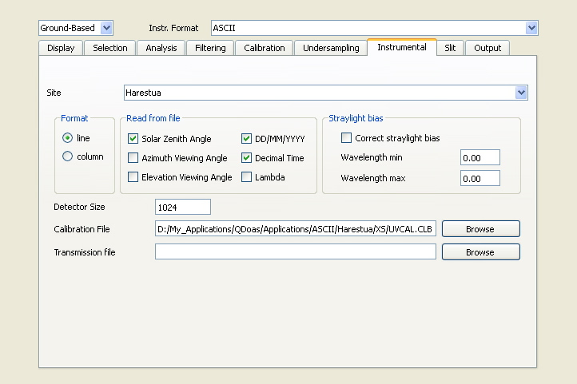

QDOAS Projects Properties : Instrumental page

Except the observation Site, the Calibration File and the Transmission file, the fields that appear in this page depend strictly on the format of spectra files to process.
Calibration file and instrumental corrections
A preliminary wavelength calibration is necessary to browse spectra. If the wavelength calibration is coded in the spectra file, it is recommended to use it by keeping the field Calibration File empty.
For the analysis of spectra, the wavelength calibration of the reference spectrum always has the priority over the spectra ones. It is important to select this file very carefully mainly when browsing spectra to save a new reference spectrum.
Some instrumental corrections can be applied on spectra. For example, a transmission function previously determined in laboratory with calibrated sources can be specified in the Transmission file field. A two columns ASCII file is expected (wavelength calibration and transmission function) and spectra will be divided by this curve before the wavelength calibration procedure.
Dark current correction is also possible according to the file format. The selected file format determines how dark currents are provided and how spectra are corrected.
For the MFC STD file format, spectra can be corrected by dark current and offset. For the MFC BIRA-IASB binary format, spectra are corrected after averaging the dark currents and the offsets present in the file. The dark current should be a spectrum measured with a large integration time (typically 30 sec) and the offset should be the average of a large number of spectra measured with a very small integration time (typically 1000 x 3 ms). Note that QDOAS corrects dark current by offset. See details in the Description of Algorithms section of the QDOAS Software User Manual.
Spectra measured by the following satellite instruments can be processed by QDOAS :
| GOME (ERS-2) | QDOAS supports the original ASCII file format but it is recommended to use the more suitable binary file format created by a modified version of the GDP (GOME Data Processor) extractor implemented at BIRA-IASB mainly for the automatic selection of the reference spectrum.. |
| SCIAMACHY (ENVISAT) | routines to read the SCIAMACHY PDS file format have been kindly provided by IFE/IUP Uni Bremen; |
| GOME2 (MetOp) | QDOAS uses BEAT library to read spectra from GOME2. BEAT (Basic Envisat Atmospheric Toolbox) provides functions to read atmospheric remote sensing data from different instruments : SCIAMACHY (ENVISAT), GOME (ERS-2), OMI, TES and MLS (Aura), and GOME-2 and IASI (MetOp). The package can be downloaded from the S[&]T web site. Before using QDOAS on GOME2 spectra, BEAT should be installed and the CODA_DEFINITION environment variable should be defined (see the Installation section of the QDOAS Software User Manual). |
| OMI (AURA) | OMI spectra are read using the HDF-EOS2 library, which is based on HDF4. |
The wavelength calibration of earthshine spectra and irradiances is provided in the files and no transmission file is needed. Both fields should then be kept empty. The only information to provide should be the spectral region to process : the band type (for GOME and GOME2) or the channel and the clusters (for SCIAMACHY).
The most popular file formats supported by QDOAS for ground-based measurements are :
| SAOZ | Système d'Analyse par Observation Zénitale developed by the aeronomy lab of the CNRS (JP Pommereau, F Goutail,...), France, and largely used in the NDACC network (Network for the Detection of Atmospheric Composition Change) for stratospheric total ozon and NO2 monitoring; |
| MFC STD | ASCII format produced by the well-known DOASIS program designed in Java by the atmospheric research group at IUP Heidelberg, Germany (Stefan Kraus,...) and largely used in the DOAS community. QDOAS requires the size of the detector and the format of the date (for example : MM.DD.YYYY). |
| MFC Binary (BIRA-IASB) | The MFC binary format generated by DOASIS is not supported by QDOAS. With DOASIS, it is easy to run scripts that convert the MFC binary files in MFC STD format.
Because spectra are saved in individual files with automatic numbering, MFC STD format is not very suitable to browse spectra and for efficient automatic reference selection (zenith of the scan for MAXDOAS data). That's
why, BIRA-IASB has developed its own MFC binary format in which all spectra of a same day including dark currents and offsets measured the night are saved in a unique file. It is possible to convert MFC STD files in this BIRA-IASB binary format using the
converter MFC_Std2Bin. See further details in the Supported spectra file formats section of the QDOAS overview chapter of the QDOAS Software User Manual. |
| MKZY PAK | developed at the Chalmers University of Technology, Goteborg, Sweden (MANNE Kihlman and ZHANG Yan) and used in the NOVAC network |
| Ocean Optics | very simple ASCII file format developed by the spectrometers manufacturer |
Other formats are specific to the different Institutes that developed them. If a format is not supported by QDOAS, it should be possible to convert the files in ASCII. When the ASCII format is selected, spectra can be provided in the file one record per line (line format), one spectral value per line (column format) or several spectra in columns (from version 2.107). According to the checked flags in the Read from file group box, the following information are expected strictly in the given order :
- Solar Zenith Angle
- Azimuth Viewing Angle
- Elevation Viewing Angle
- Date in the DD/MM/YYYY (day/month/year) format
- Fractional time
In the column format, angles had to be given on the same line until version 2.106. From version 2.107, the column format accepts also matrices of spectra and angles have to be given in separate lines. With column format, a wavelength calibration can be provided with spectra. It should be given in first column of each data set.
Some examples of ASCII files supported by QDOAS are given in annex of the QDOAS Software User Manual.
The information on the observation Site is used to (re‑)calculate solar zenith angle from geolocation coordinates given for this site in the Sites sheet. This can be useful for example if the solar zenith angles saved in the files are not reliable enough. The abbreviation of the observation site is also used to build automatic output file names (see the Output Page). The longitude is particularly useful to select reference spectra of the day using the local time instead of Universal Time in case fractional days and times given in UT are distributed in two days (for example, measurements in China).
Requested for some spectra files format, this option allows subtracting from a spectrum the signal averaged on the specified range of wavelengths. This is useful for example, to retrieve SO2 in the UV region where the signal is very poor and where the straylight is problematic. Even if the straylight can be attenuated by subtracting from the spectra, the average of the signal measured in the UV region (below 300 nm if possible), it is recommended to characterize it in laboratory.